n-gram 表越大，模型越会背训练集：gap 随表容量涨到 9 以上
313 个实验完成。表行数从 1 千涨到 1 百万，gap（验证集 loss 减训练集 loss，衡量背题 versus 泛化）从约 0.1 涨到 2.5（只用 bigram）再到 8.5（六阶联合）。换成无碰撞词典表，同样配置下 gap 从 6.5 降到 1.2。把训练量固定成 3 个 epoch 后，整张包络图再下移 4–6 倍，曲线形状不变。
- 模型 vanilla GPT 8L·768d
- 词表 8192 · 语料 49.7M token
- 训练 2000 步 · total batch 147k
- 硬件 8×H200（360-2） · 2026-10-17
六条实验线 313 臂完成，只有 2 个大表尾点单卡放不下
本轮共六条线：表容量扫描（60 臂）、数据池包络（30 臂）、模型大小扫描（50 臂）、epoch 固定包络 E=3（96 臂）+ 剂量网格（18 臂）+ seed 误差棒（52 臂）、无碰撞词典三方对照（22 臂，dict/hash/keephash 全 H200 同机）。两个尾点需要 5 或 6 张 300 万行的表，参数、优化器状态、梯度各占一份显存，合计 138–165 GB，超过单张 H200 的 141 GB，任何 batch size 都放不下。
各线完成数
| 实验线 | 内容 | 完成 |
|---|---|---|
| v2.2 表容量 | 6 个阶集合 × 10 个表容量点 | 58/60（2 点 infeasible） |
| v2.3 数据池包络 | 6 个阶集合 × 5 个池点 | 30/30（49.7M 点归入 E=3 协议） |
| v2.4 模型大小 | 5 档模型 × 2 模式 × 5 个池点 | 50/50（49.7M 点归入 E=3 协议） |
| seed 复跑（固定步数） | R=1M 与池 10M 关键臂 × seed 43/44 | 24/24 |
| epoch 固定包络 E=3 | 6 阶集合 × 6 池 + 5 档模型 × 2 模式 × 6 池 | 96/96（新协议 §78） |
| epoch 剂量网格 | E∈{2,6} × 池{10M, 49.7M} × 6 阶集合 | 18/18（严格单调，无平台化） |
| E=3 seed 复跑 | v23/v24 关键臂 × seed 43/44（两池端） | 52/52（tri +0.76、n25 −0.53 均严格单调） |
| OE 三方对照（dict/hash/keephash） | 3 种表 × 7 个阶集合 + 无表基线，全 H200 同机 | 22/22（覆盖率 −0.75～−5.67 主导；碰撞隔离 +0.25～+0.64 轻微反向） |
| v2 阶数扫描（360-1） | n=2..8 单独 + 2–5 联合 + 无表基线 × 3 seed | 27/27（4 臂因 GPU ECC 隔离重跑） |
表行数超过 1 万后，gap 开始陡增；超过 10 万后进入 1–9 的高原
每一阶 n-gram（连续 n 个 token 的组合）查一张 R 行的哈希表。R 小时大量不同的上下文挤进同一行，表记不住任何东西，gap 接近 0。R 超过 1 万后，表开始记住训练集里反复出现的上下文，gap 陡增。阶数越多的集合涨幅越大：六阶联合在 R=30 万时 gap 达到 9.6。
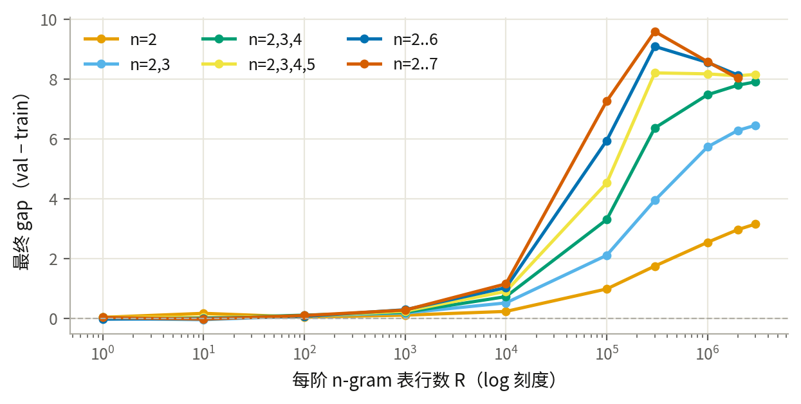
R=100 万时，六阶联合的 gap 达到 8.6：训练集 loss 压到 0.15，验证集停在 8.7
大表把训练集的上下文逐条记住。2000 步（2.95 亿 token）后，六阶联合的模型在训练集上 loss 只有 0.15，在没见过的验证数据上 loss 高达 8.7——模型几乎只输出背下来的续接。
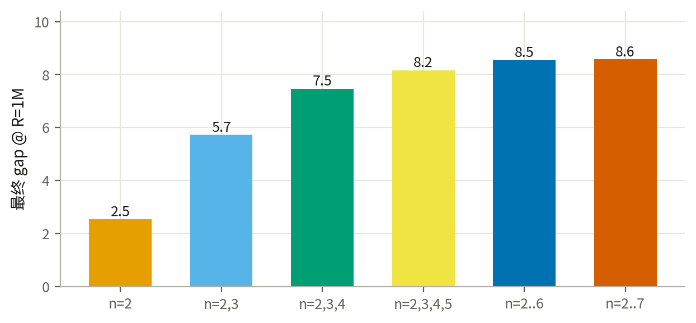
forking 从第 2 个 epoch 开始：每重放一遍数据，gap 阶梯式抬升
epoch 指模型把整个数据池完整看过一遍。把 R=100 万的六条曲线画到 epoch 轴上：第一遍数据期间 gap 几乎为 0，第二次见到同一数据（epoch 2）时瞬间跳变，之后每重放一遍就抬一阶；到第 3 个 epoch 已经 2–6.5，与 DeepSeek/Kimi 在预训练第 3 个 epoch 观察到的严重退化一致。小数据池（10M token，30 个 epoch）则是缓慢连续爬升到 10.5——重复遍数越多，背题越深。
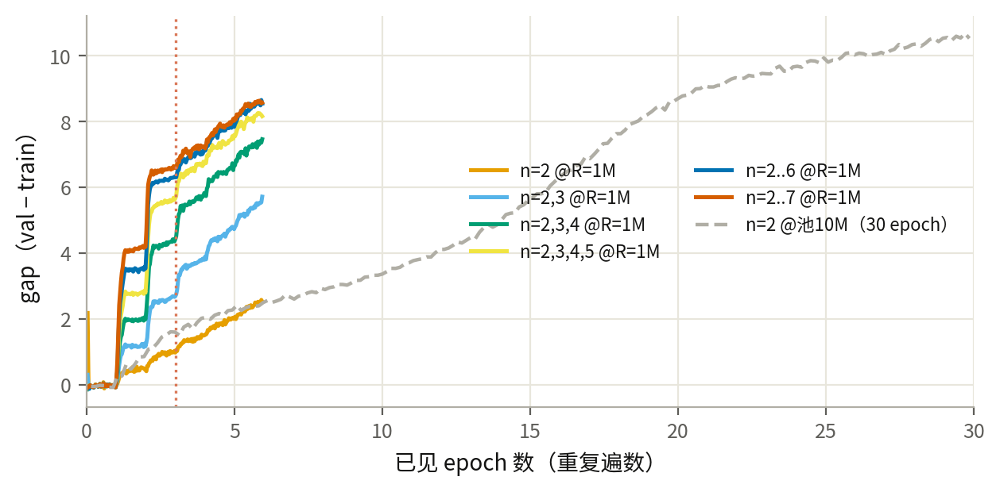
数据池从 10M 扩到 37M，高阶集合的 gap 几乎不动
固定 2000 步，把不重复的训练数据池从 1000 万 token 扩到 3700 万（重复次数从约 30 个 epoch 降到约 8 个）。n=2 的 gap 从 10.5 降到 3.7，但四个以上的阶联合时，gap 停在 8.5–10.7 几乎不降。想让高阶集合的 gap 消失，池子要远大于 37M——1B 点需要新语料，待补。
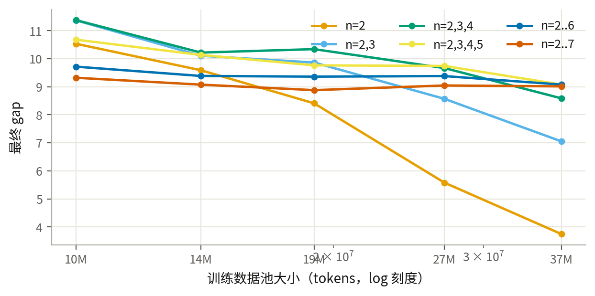
模型越大，trigram 的 fork 越重：159M 模型 gap 13.6，17M 模型 10.8
固定池 1000 万 token、只挂 trigram 表，把模型从 4 层 512 宽（17M 参数）加到 12 层 1024 宽（159M）。backbone 越大，训练集背得越快（loss 从 1.34 降到 0.62），验证集坏得越多，gap 从 10.8 涨到 13.6。这是模型大小对 forking 敏感度的第一个斜率。
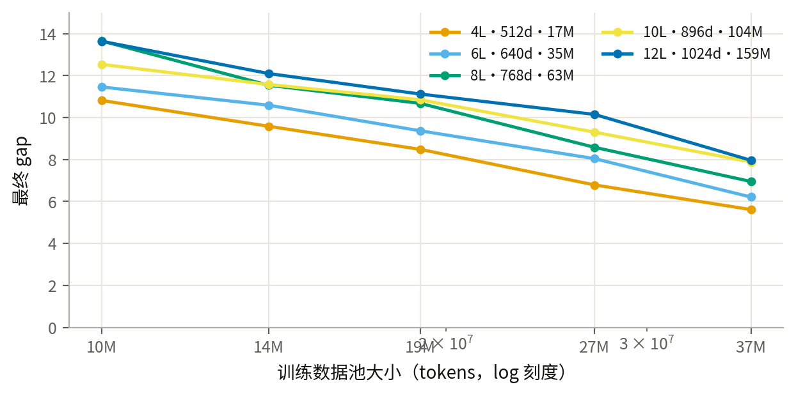
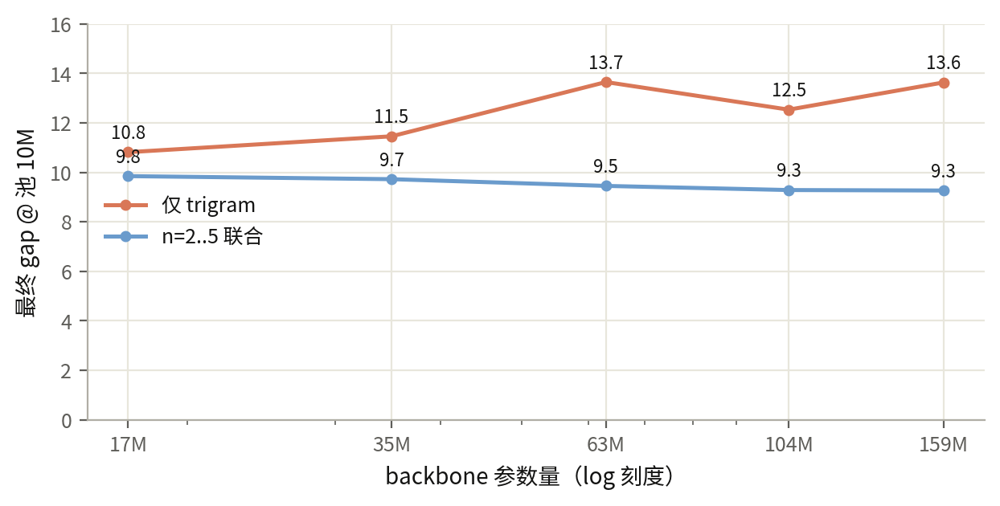
n=2..5 联合时，五种模型大小的 gap 都在 9.3 左右
换成 n=2..5 四张表联合，模型大小对 gap 的影响消失：五档模型全部落在 9.3–9.8。联合表的碰撞已经把更新集中得很强，backbone 的容量差异不再是主要因素。
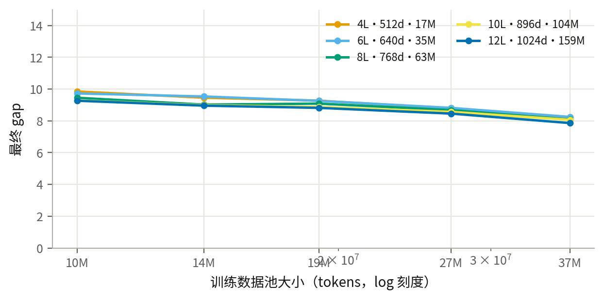
把训练量固定成 3 个 epoch 后，整张包络图下移 4–6 倍，形状不变
上面两条包络固定的是训练步数（2000 步 = 2.95 亿 token）：池越小，同一份数据被重复的遍数（epoch）越多，10M 池等于 30 个 epoch。新协议改为固定 epoch 数：步数由池大小自动算出（步数 = 3 × 池 token 数 ÷ 147k），每个池点都严格只看 3 遍数据。96 个臂全部完成，每个池点的实际 epoch 数精确等于 3.0。固定 epoch 后，n=2 在 10M 池的 gap 从 10.53 掉到 1.67，高阶联合从 9–11 掉到 6.3–6.8；曲线形状不变——n≤4 的 gap 仍随池增大下降（n=2：1.67→0.98），n≥5 联合仍几乎不动（6.3–6.8）。
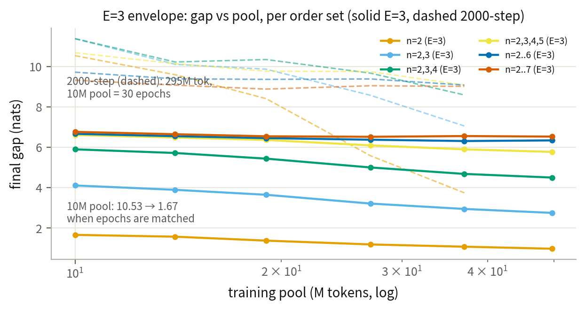
模型大小斜率在同一协议下重测：trigram 的 gap 仍随 backbone 变大上涨，但幅度从 +2.8（10.8→13.6，固定步数）缩到 +0.7（2.97→3.69，10M 池）；n=2..5 联合在两种协议下都对模型大小不敏感，E=3 下甚至随模型增大略降（4.98→4.40，49.7M 池）。固定步数版高估了模型效应——大模型在小池上被动多看了几十个 epoch，多出来的背题被记在了模型头上。
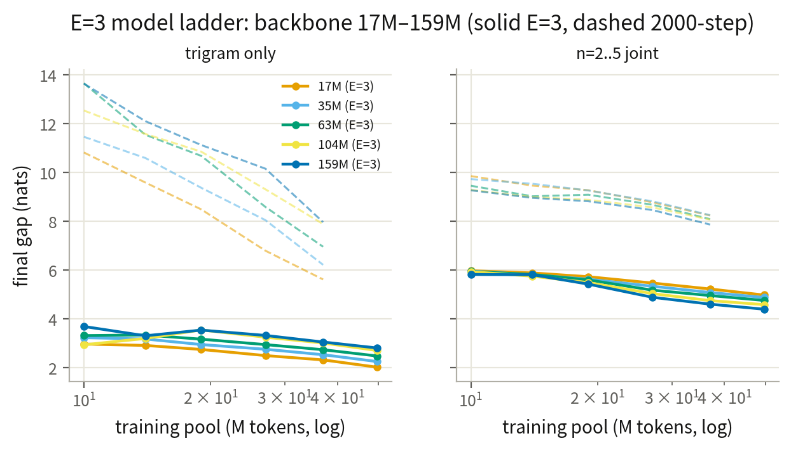
无碰撞词典表把 n=5 的 gap 从 6.5 压到 1.2
同一张 100 万行的表，两种放法：hash 表随机映射，4790 万个不同的 5-gram 挤进 100 万行，98% 碰撞；dict 表取训练集里最常见的 100 万个 5-gram，一行一个，零碰撞。零碰撞让 n=5 的 gap 从 6.53 降到 1.18，n=4 从 6.34 降到 1.58。阶数越高，无碰撞的收益越大——高频上下文被完整保留，低频上下文根本不进表（等价于预防式的低频 mask）。
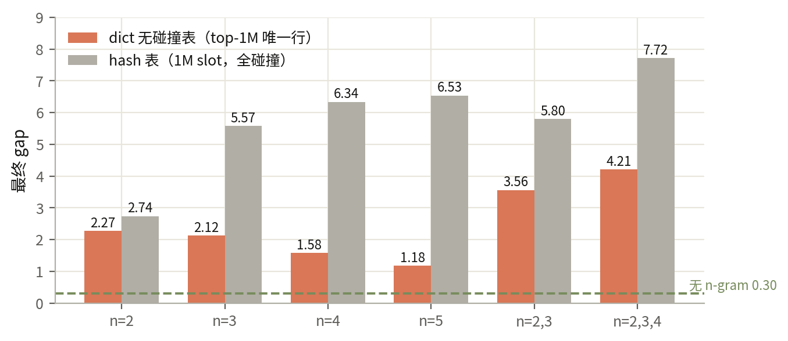
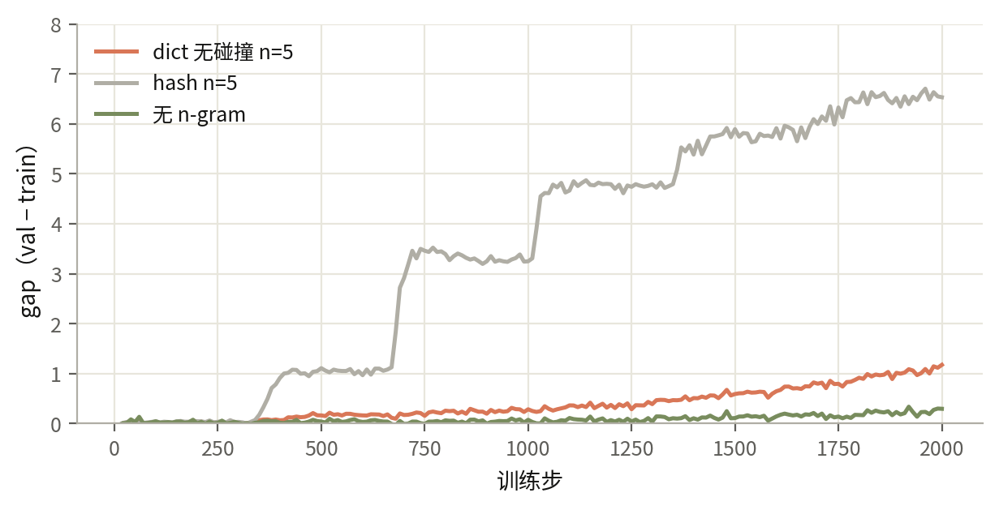
四表联合（n=2..5）时把三种表放在同一硬件（H200）上配对：hash 表 gap 8.27（与 360-1 三 seed 的 8.23 一致），keephash（只保留 top-100 万高频上下文、行号不动）3.87，dict（kept 集合零碰撞）4.43。拆开两个因子：把低频上下文挡在表外（覆盖率）贡献 −4.39，是收益主体；kept 集合内部零碰撞（碰撞隔离）反而 +0.56——行少负载轻时，独占行让记忆更锐。单阶同样如此：n=5 的 hash 6.59 → keephash 0.92（覆盖率 −5.67），dict 1.17（隔离 +0.25）。结论：continue-BPE（不换词表、只保留高频切分的继续训练方案）式的「只留高频」本身就是主要收益来源，零碰撞在轻度负载区是轻微反向项。
低频上下文贡献更多 gap：各阶都呈幂律，指数对拟合窗口与碰撞负载敏感
把每个 n-gram 上下文在训练数据里出现的次数记为 f。对角线指每个阶在自己单独的实验里、按 f 分桶量自己的 gap。整数频率 1–9 单独分桶、≥10 合并对数桶后：f=1 的最低频上下文 gap 高达 2–7，随 f 幂律下降（gap ≈ A·f^−α），指数约 0.28–0.56。指数细节依赖拟合窗口与表的碰撞负载（每行表项平均承载的不同上下文数，3.4→46）：在更粗的合并桶窗口里 α 随负载一路衰减到 0 以下，在本图的细窗口里则非单调（n=4 峰值 0.56）。两种窗口的共同结论：低频端贡献大 gap；高阶（n≥6）拟合只剩少数有效桶、误差大——阶数与碰撞负载无法分离，碰撞控制的解法归口无碰撞词典线（上文 dict 表）。

口径与复现
| 项 | 值 |
|---|---|
| gap 定义 | val loss − online train loss（同 step） |
| setting | agents.md §1 极简 setting：input 注入、lr 6e-4 warmup_constant(100)、表 RMSProp (0,0.99)×128、bf16 不 compile |
| 诊断 | 每 10 步 fixed-val + 每 token loss/context dump（token_stats_*.npz） |
| run_id | v22r_* / v23d_* / v24ms_*（H200, 360-2）；v2ord_*（H200, 360-1）；v21_*（A100）；*_e3_*（E=3 协议，360-1 + 360-2） |
| 日志 | docs/experiment-log.md §73–§78 |